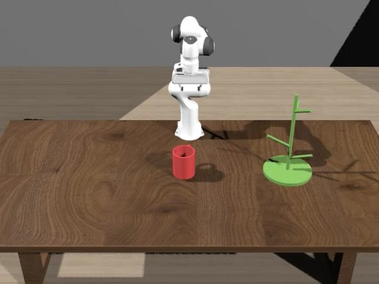
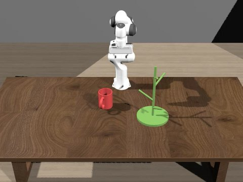

Success falls at every level
Mean success over each level's 28 tasks. GPT6-Astra is below both single-task imitation policies at Level 1 and above them at Levels 2–4. π0.5 multi-task is lowest at every level.
 2Nanyang Technological University
2Nanyang Technological University 5Nanjing University
5Nanjing University 9The Hong Kong University of Science and Technology
9The Hong Kong University of Science and TechnologyManiLadder is a difficulty-calibrated simulation benchmark for robot manipulation.
Task difficulty level is objectively anchored by the success rate of the same policy (a 50M flow matching imitation learning policy) trained on the same number of demonstrations with the same training budget.


 Target L2
Level 2
Target L2
Level 2
Outside the range: change the design (initial randomization, error tolerance, object geometry, task horizon) and repeat.
In each task suite, we design 4 manipulation skills for rigid body tasks and 3 different object properties for deformable object tasks.
4 tasks, 4 different skills
3 tasks, 3 object dimensions
The four baselines from the paper, each evaluated with 50 rollouts per task. Policies are ranked by Attained Level: how many rungs of the ladder they clear.
The highest difficulty level at which a policy reaches a task success threshold τ on at least a fraction ρ of the tasks, at that level and at every level below it. AL = 0 means the Level 1 criterion is not met.
Ranked by AL@50, then AL@80, then mean success. Mean = average over the tasks a policy was evaluated on; a task without a result counts as not meeting τ. AL is computed on this page from the per-task results and matches the paper for the three single-task policies.
The per-task results behind the leaderboard. Hover a mark for exact numbers, and click a task in the heatmap to watch it.
Mean success over each level's 28 tasks. GPT6-Astra is below both single-task imitation policies at Level 1 and above them at Levels 2–4. π0.5 multi-task is lowest at every level.
Tasks per success bucket. The two lightest segments are the tasks that count toward AL@50; the dashed line is the 23 a level needs.
One column per task, one row per policy, sorted within each level from most to least solved. Bright cells in one row and dark cells in the others mark tasks only one method solves.
Count of tasks on which each policy has the highest success. π0.5 wins the most at Level 1, GPT6-Astra at Level 2, Small Flow-Matching at Level 3. At Level 4, 12 tasks are a 0% tie.
Mean success over all levels. The calibration policy is flat across groups by design (about 30%). π0.5 and GPT6-Astra peak on single-arm dexterous tasks (44%, 47%) and bottom out on dual-arm dexterous ones (26%, 28%). π0.5 is 9 points better on deformable than rigid objects; GPT6-Astra is even.
Largest gaps between GPT6-Astra and the better of the two imitation-learning policies, in percentage points. Bars to the left take the color of the imitation policy that wins.
Each dot is a task: single-task success on x, multi-task (one policy per level) on y. Dots under the dashed line lost success. The losses are largest at Levels 1–2, about 17 points on average; at Level 3 multi-task succeeds at all on only 3 of 26 tasks.
No task matches these filters.
Five questions, answered on the ladder.
Best of Small FM, π0.5 and GPT6-Astra on each of the 32 suites
π0.5 trained on one task set, then fine-tuned on another
π0.5, one policy per task (ST) vs. one for the whole benchmark (MT-A)
π0.5 on the 16 Level-2 rigid-body tasks, 20 to 200 demos per task
8 tasks rebuilt on a real xArm, 50 trials each, next to their simulated twins
@article{maniladder2026,
title = {ManiLadder: Benchmarking Robot Manipulation Through a
Categorized and Multi-Level Task Ladder},
author = {Gao, Chongkai and Shi, Jieao and Mu, Zhaoyu and Lin, Yudi and Liu, Xuanwei and
Ng, Wei Ken and Cheng, Baiye and Chen, Anqi and Liu, Kerun and Li, Zhuoran and
Huang, Xuchuan and Li, Haoyang and Zhu, Shengjia and Chan, Nga Teng and
Zhang, Yuxuan and Chen, Xingyu and Shao, Lin},
year = {2026}
}